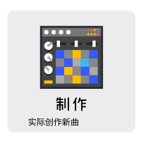
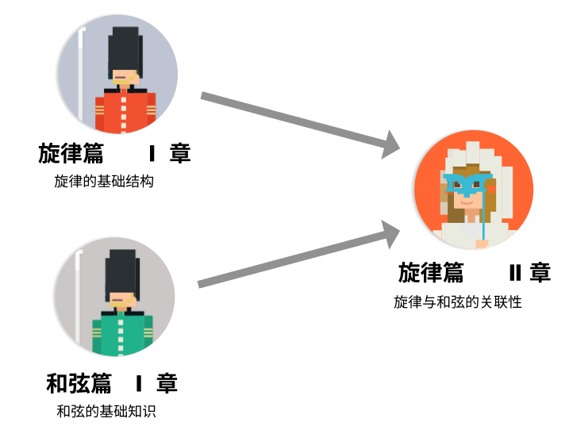

1. 制定学习规划吧
1. 制定学习规划吧
学习音乐理论的顺序与过程至关重要，它直接决定了你会觉得乐理趣味盎然还是枯燥乏味。本页面将围绕“理论学习与实际作曲应当以怎样的节奏平衡推进”等步调分配问题，为你提供具有参考价值的建议。
基本的三大支柱
融入音乐理论的音乐创作活动，主要围绕三大支柱展开：

第三项“研究”，实际上是一个非常关键却常被忽略的核心环节。在学习了某种理论之后，去尝试扒带（耳辨扒谱）或者进行和弦分析，往往会有全新的领悟与发现。这不仅能在创作间歇起到调节换脑的作用，而且将这三者保持良好平衡，正是音乐创作活动的最理想形态。
学一个知识点，写一首曲子（1 Knowledge, 1 Practice）
作为基本参考基准，每学到一个能在作曲中运用的知识点，就应该切实运用它去写一首曲子，这样的节奏才是合乎逻辑的。因为即使通过阅读文字在“头脑”中理解了概念，在“耳朵”真正领会之前，依旧需要大量的实战经验。
在阅读本教程的过程中，很可能会出现这样的脱节：文字说明所表达的意思完全看得懂，但听示范音频时，对于声音听起来是“浑浊”还是“稳定”，耳朵却毫无感觉……这种认知脱节是完全正常的。因为辨别声音特质的能力——即听觉音感——是不可能一蹴而就的。音感就像身体机能一样，与力量训练如出一辙，除了脚踏实地积累别无捷径。
因此，在从本网站获取了知识之后，请记住这绝不是学习的终点，而是刚刚开始。带着这些知识付诸实践，唯有这样，学习的一个完整闭环才算宣告完成。

特别是在初学阶段，头脑理解与耳朵感知之间的鸿沟往往非常显著。如果你在尝试写歌或分析后，依然对理论所讲的声音感觉摸不着头脑，那么不妨先抱持着“反正理论上通常是这么归纳的”这种心态，暂时放宽心继续往下学即可。
2. 学习路线与推进方式
教程的核心正文部分——和弦篇、旋律篇、节奏篇——被划分为若干个“章”。每一章都有大致的主题划分，并且基本上越往后的章节难度越高。在各章的目录归档中，你可以阅读到每章、每节的详细介绍。目录可以通过顶部导航菜单访问。
自由路线系统（Free Scenario）
SoundQuest 提倡一种**自由路线系统（Free Scenario System）**的学习方式。换句话说，旋律篇、和弦篇、节奏篇各自以怎样的顺序去攻克，完全由你自主决定。
不过，部分内容在逻辑上有一定依赖关系，例如想要学习旋律篇第二章，就需要掌握和弦篇第一章的知识。关于这些前后顺序的微小限制，在各章乃至各篇文章开头都会有明确的提示说明。

设定学习终点
尽管目录中罗列了极为庞大数量的文章，但你完全没有必要把它们全部学完。相反，学到满足自己需求的最适范围便果断收手，才是更为明智的选择。下面以几个主流曲风门类为例，介绍各个方向建议的终点参考：

如果追求简约质朴的音乐风格，仅掌握到第一章的知识也已完全足够。而且自由派音乐理论没有任何绝对禁则，因此绝不会发生“如果不学到第几章就会被陈规戒律绑架”的情况。你可以轻松地开始，在心满意足的地方随时收笔。
当然，这只是一种粗略的参考。即便是电子音乐，如果你想制作 Electro Swing，或者即便是嘻哈音乐，如果你想通过 MIDI 制作偏 Jazz 质感的 Track，那么第六章爵士篇的知识显然会大有裨益；反过来说，即使是吉他弹唱，根据音乐方向的不同，简单的三和弦体系有时也完全够用。最重要的是始终带着“这对我自己的音乐创作是否有用”的思考来推进学习。或者，当你在分析市面上的优秀音乐作品时，发现几乎不再会遇到自己不认识的技法，那么这也正是告一段落、达成学业的最佳时机。
门阶测试（Gateway）
在部分章节的开篇，设置了名为“Gateway（门阶）”的专属页面。
门阶测试是一个以测验形式检验此前内容掌握熟练度的环节。它包含了单选、排序、听音等多种题型，全面考察音乐理论相关技能。
这纯粹是出于“有总比没有好”的心态而设置的辅助功能，想要继续向下阅读，并不强制要求你在测试中拿到高分。毕竟这是对前面章节的全面复习，其中也会涵盖一些与接下来的新章节并不直接相关的题目。 再加上前面提到过的，概念知识可以很快记住，但音感无法一日练成。因此，出现“看谱题目全对，但听力题完全抓瞎”的情况是司空见惯的。遇到这种情况，大可将音感作为未来的长期课题暂且搁置，先继续往后阅读新章节。当然，如果完全跳过门阶测试，也是完全可行的选项。
3. 篇章选择
通常推荐的基本学习流程，是按照各篇的第一章轮流阅读（即旋律第一章、和弦第一章、节奏第一章），然后再依次推进到第二章……以此类推。不过阅读哪个篇章完全自由，哪怕一口气只把和弦篇读穿也完全没问题。
然而，一旦被告知“完全自由”，大家反而容易迷茫不知所措。如果只看第一章，我们有一套推荐的学习顺序，那就是：“节奏篇 → 旋律篇 → 和弦篇”。 之所以这么排，理由非常纯粹——按从易到难的顺序排列。和弦篇涉及复音与和声知识，难度自然偏高；从更平易近人的旋律与节奏切入，待习惯了理论世界的语境之后再攻克和弦篇，心理负担会小很多。尤其是节奏篇中完全没有五线谱登场，从这个角度看门槛也是最低的。
4. 音乐理论之外的世界
从更根本的角度来看，音乐制作所需的技能绝不仅限于音乐理论本身。
- 曲式论（乐式学） 诸如“主歌/副歌（Aメロ/サビ）”、“Hook/Verse”、“主题/即兴/主题（Head/Solo/Head）”、“呈示部/展开部/再现部”等乐曲各个“段落”的结构组织法。不同音乐流派都有其经典的范式。
- 编曲技法（Arrangement） 采用怎样的乐器编制，让各类乐器承担怎样的演奏职责与织体形态。
- 混音论（Mixing） 各乐器在声场左右声道的声像定位（Pan）、音量响度平衡、混响与回声的渲染控制、频响 EQ 平衡调整等。这在不同风格间的倾向差异同样极大。
- 硬件与技术设备操作（Production & Gear） 鼓机、合成器等各类乐器音色的使用方法，效果器链调试，以及宿主编曲软件（DAW）的操作技能等。
这些领域的技能与知识，在标榜为“音乐理论”的内容中通常极少被深入讲解。因为不同创作者各自所需的技术千差万别，大家往往需要根据各自的实际路线另行补充学习。
例如，对于从零开始一人包揽全流程的独立音乐制作人而言，就算理论造诣再深厚，如果缺乏编曲或混音技术，也很容易换来“听得出想法很深奥，但音色质感实在太寒酸单薄”这样令人惋惜的评价。因此，切勿偏执沉迷于乐理本身，请务必注重平衡吸收各类相关制作知识。
无论你选择怎样的学习路线，最为核心的法则就是切忌急于求成。唯有付诸实践，知识才能真正转化为自身的养分。如果你要将本网站的所有内容彻底掌握，哪怕耗费4年时间也实属平常。这绝非指把所有文字通读一遍需要4年，而是说在平衡兼顾“理论学习、扒带分析、创作实践”的前提下一路稳扎稳打走来，真正融会贯通时过去三四年是再自然不过的规律。只要不急躁、脚踏实地前行，掌握音乐理论绝非难事。让我们一步一个脚印，从容探索吧。